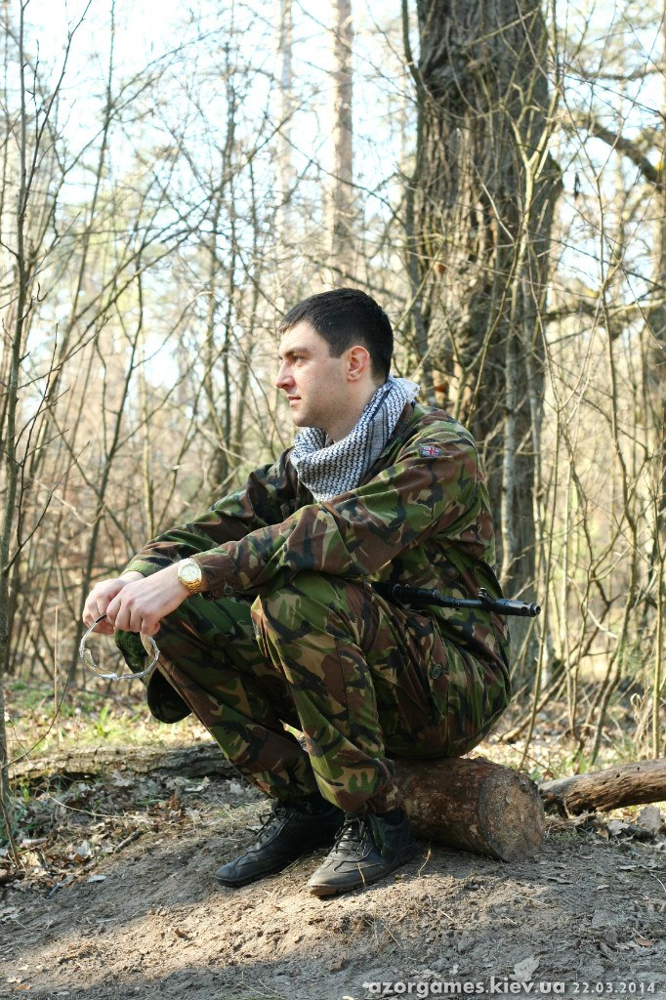

Студенческие годы.
Поступил и закончил я КПИ, хотя если честно я не надеялся туда попасть. Еще со школы я научился смотреть трезво и мне казалось что со своим сельским образованием попасть во второй по рейтингу вуз страны это маловероятно, так что запасные варианты у меня были и их было не один. Но на мое удивление или везение меня взяли у все три и мне просто осталось выбирать что лучше.
Много кто говорил мне что его студенческие годы это лучшие годы в его жизни. Я не знаю как у них так получалось наверное я какой то не правильный, потому что студенческие годы особенно первые годы это был просто ад. Адом это было потому что все первые два года я был только догоняющим, как оказалось я был один кто попал туда из обычной школы а не лицея, так что пахать там пришлось очень много. И да у меня есть одна фотография ее вы можете посмотреть выше. Ну а поскольку сейчас уже поздно и мне нужно еще это запилить на html то я пожалуй остановлюсь по наливанию воды.
